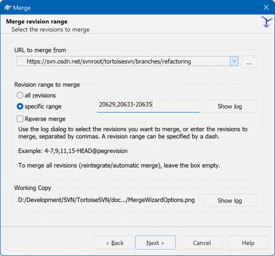
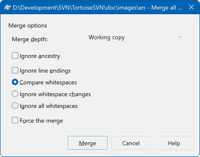

14合并分支：把改动并回主干
功能在分支上做完了，接下来要把它并回主干，让别人也能用上。 这一步叫合并（merge）。开始之前先记住一条最重要的规矩： 合并要在「接收改动的那一方」的工作副本上做——想把分支合进主干，就要先站到主干的工作副本上去操作。
这是合并最容易搞错的地方，也是新手最常翻车的一步。
合并时你站在某个工作副本上右键执行合并，SVN 会把你指定的「来源」上的改动，搬到「你当前所在的」这份工作副本里来。 换句话说：
- 你站在主干上，选择从「分支」合并 → 分支的改动流进主干。这是「功能做完了合回主干」。
- 你站在分支上，选择从「主干」合并 → 主干的改动流进分支。这是「主干有新东西了，同步到分支上」。这个方向也要经常做。
所以动手前先问自己一句：我要让改动流到哪里去？然后切到那一边再操作。 如果不小心搞反了，看到的效果就是「一堆莫名其妙的改动出现在错误的分支上」——虽然可以撤销，但会很麻烦。
这一点是 SVN 合并机制里最值得知道的：每次合并，SVN 都会在版本库里留下记录， 标明「这次合并把来源的哪些版本吃进来了」。
带来的好处非常实在：下次你再从同一个来源合并时，已经合过的版本会自动被跳过， 不会重复合并一遍、也不会产生一堆重复的改动。
这跟很多人对「合并」的直觉不太一样。别的工具里，合并常常需要你自己记住「上次合到哪了」（记下那个版本号，下次从下一个开始）； SVN 把这件事交给了服务器记住，你只要在向导里选好范围就行。
也正因为如此，日志窗口里会看到一些版本被灰显（表示它们的改动已经被合并过了）—— 这是 SVN 在告诉你「这些你不用担心了」。这个现象在下一节的版本拓扑图里会看得更清楚。
面对面看合并向导：第一步
合并向导有好几页，第一页最关键——它决定这次合并要按哪种方式做。

① 顶部的合并方式（三个单选项）——这是整页的核心，选错了后面的步骤会完全不一样：
最常用 Merge a range of revisions · 合并一段版本范围
意思是「把来源路径上某几个版本的改动搬到我这边来」。 日常 95% 的情况都用这一项——比如「把分支上第 100 到 130 版的改动合进主干」。 它把「改动」当作要搬运的对象，可以只搬一部分，也可以分几次搬。
Merge two different trees · 合并两棵不同的树
意思是「把 A 路径的某个状态，变成 B 路径的某个状态」。 它比上面那种更灵活也更难掌握，典型用途是同步两条长期并行的分支、 或者处理那种「不是线性历史」的合并（比如分支和分支之间互相合）。
如果你只是想「把分支上的活儿合回主干」，不需要碰这一项。
Merge reintegrate a branch · 把分支完整地合回来
这是一个「把整条分支整个搬回来」的专用方式。 它要求你把分支上所有的改动一次全合过来，不能只合一部分。 哪些版本有这一项、哪些没有，取决于你服务器上装的 SVN 版本—— 新的版本里它已经被整合进第一种方式，界面上可能看不到它。 拿不准就用第一种。
② URL to merge from · 从哪儿合过来——填「来源」的完整仓库地址。 旁边同样有
... 浏览按钮可以点开仓库浏览器挑路径。这里填的就是你要合并过来的那条分支（比如
.../branches/order-export）。 有些情况下这一栏会自动带出一个建议值，但一定要自己核对一遍。③ Revision range to merge · 要合哪些版本——填版本号的范围， 格式是「起始版本-结束版本」。
• 留空是常见做法：表示「把来源上所有还没合过的版本都合过来」。 因为 SVN 记得哪些合过了，留空通常就等于「补齐剩下没合的那些」——这是最省心的用法。
• 填具体范围：比如只想合
100-130， 就明确写上。适合「这次只合前半部分，剩下的下周期再说」的情况。• 注意它是「从哪个版本到哪个版本」，不是「第几版到第几版」。填反了会得到一个空合并（什么也没发生），或者提示你范围内没有可合并的内容。
④ Show log · 帮我挑版本——这一页最实用的辅助按钮。 点开会显示出源路径的完整提交历史，每条记录前面有勾选框。
你可以用鼠标勾选要合并的那几条提交，点确定后，向导会自动把对应的版本范围填进上面的输入框。
它最贴心的点是会显示「哪些版本已经合过了」（那些条目会灰显或带标记）。 所以你不用自己去查上次合到哪了，只看没灰的、勾上它们就行。
不确定范围的时候，永远先点这个按钮看看。
⑤ Reverse merge · 反向合并——勾上它，这次的合并方向会反过来： 不是「把来源的改动加进来」，而是「把来源的改动从我这儿拿掉」。
听起来奇怪，但用途很明确：撤销一次已经合并进来的改动。 比如某个功能合并进主干之后发现有大问题，要紧急撤掉，就用它。
日常正常合并时，不要勾这一项。勾错的后果是「你以为合进来一个功能，实际上把对应内容删掉了」。
⑥ 底部按钮——
Next > 进入下一页（选具体选项、确认合并参数）， 最后一步会让你点 Test Merge 或 Merge。 这两个按钮的区别，是本页下面蓝色提示框专门要讲的。
完整的合并操作步骤
如果你用的是两份独立的工作副本，直接在主干那个文件夹上右键即可。
理由：你合进去的改动，要落在主干最新的内容上。 如果本地是几天前的旧版本，合并过程会产生大量本来不该有的冲突，白费力气。
原因见下面橙色警告框。
注意是在主干文件夹上右键——右键的位置决定了改动流向哪里。
Merge a range of revisions。只合一部分改动、或者要分几次慢慢合，它都能应付。
URL to merge from 里填分支的地址（用 ... 浏览挑选最稳）。然后点
Show log，在历史列表里勾选要合并的那些提交， 让版本范围自动填好。看到灰色的、已经合过的条目就跳过它们。
Test Merge 按钮。 点它！它会把「这次合并将要产生的改动」列出来给你看， 但不会真的动你的文件。详细说明见下面蓝色提示框。
就算没有冲突，也建议随便打开几个被合并的文件看一眼—— 尤其是那些「两边都改过」的地方。
Message 里明确写「从哪条分支合并过来、做了什么」。 比如 从 branches/order-export 合并订单导出功能，含 118-142 版改动。这次提交会把合并记录一起存进版本库，下次合并才能自动跳过这些版本。
这是本节最想推荐的一个习惯。
Test Merge 是「试合并」：它完整地走一遍合并的计算过程， 把将要发生什么清清楚楚列出来——哪些文件会被改、哪些会被新增、哪些会被删除、 是否会产生冲突——但绝对不修改你的任何文件。
为什么值得多花这一步：
- 版本范围填错时，一眼就能看出来。 比如你以为要合 30 个版本，结果预演显示「无改动」—— 那多半是范围填反了、或者这些版本早就合过了。在没有付出任何代价的时候发现错误，是最划算的。
- 提前知道会不会冲突。 如果预演结果里显示大量冲突，说明分支和主干已经分岔太久了。 这时候先别硬合，可以考虑先把主干的改动同步到分支上、在分支上把冲突解决掉，再来合主干—— 这样风险小得多，而且不会把主干搞成冲突状态。
- 能发现「不该动的东西要被动了」。 比如预演里冒出来一个你没预期会被删除的文件， 那就是提醒你「这条分支上有别人的改动混在里面」，需要先弄清楚再合。
- 它给了你一个反悔的机会。 合并一旦执行，文件就被改了；虽然能撤销，但那又是一番操作。 预演是零成本的保险。
养成习惯：看到 Test Merge 就点一下，看清结果再决定要不要点 Merge。 这个动作只花几秒，但能挡掉绝大多数合并事故。
干净的意思是：没有未提交的本地改动，也没有还没解决的冲突。
为什么要求这么严？因为合并会往你的文件里写东西。 如果本地本来就有一批没提交的改动，合并的结果会和它们混在一起，然后：
- 你分不清哪些是合并带来的、哪些是你自己改的。 提交的时候更麻烦——要么把自己的半成品一起提上去，要么费半天劲挑拣。
- 冲突会变得难以理解。 冲突对话框会告诉你「我的版本」和「别人的版本」冲突了， 但这里的「我的版本」其实是一个混合体，根本没法判断该留谁。
- 出问题时无法干净地撤销。 想放弃这次合并？你只能连自己的改动一起撤掉，那要多难受有多难受。
正确顺序永远是： 提交（或撤销）所有本地改动 → Update 到最新 → 确认干净 → 再开始合并。 这三步只花一两分钟，但能省掉一整个下午的排查。
更省事的办法：一键合并
向导虽然清楚，但每次都要点好几页也很烦。 TortoiseSVN 提供了一个专门的快捷方式，专门对付「把我刚做完的这条分支合回去」这种最常见的情况。

Shift 是这个菜单的关键——不按 Shift 是看不到它的。
它替你做了什么：一键合并不需要你选合并方式、不需要你填版本范围。 SVN 自己去分析「这个工作副本当前的状态」， 找出所有还没合并进来的改动，然后一次性把它们全都合过来。
换句话说，它相当于自动帮你完成了「填来源、挑版本范围」这两步最容易出错的工作。
什么时候用它最合适：
• 分支上的功能全部做完了，要整体合回主干——这正是它的主场。
• 你自己不太确定该合哪些版本，只想「把该合的合回来」。
• 你是那种「分支不多、合并关系很单纯」的团队。
什么时候别用它：
• 你只想合并一部分改动（比如一个功能分两批合），它会把所有没合的都合过来，太粗了。
• 两条长期并行的分支互相纠缠、合并关系复杂时——自动判断可能和你的预期不一样， 这种场景还是老老实实走向导，每一步都自己确认。
对话框里通常有的内容：它会显示分析出来的合并计划（从哪儿合、合哪些版本）， 你确认无误后点执行。执行完之后，检查文件、处理冲突、提交的步骤和向导方式完全一样。
优点：每一步都看得见、都能自己定——合并方式、来源、版本范围全在你手上； 可以精确地只合一部分改动；任何特殊场景它都能应付。
缺点：要点好几页；版本范围这一项需要你判断，填错了就得重来。
适合：所有复杂情况；只合部分改动；两条分支互相合并； 以及你还不熟悉合并机制、想看清楚每一步的时候。
优点：快，一步到位；不用自己判断版本范围，省掉了最容易出错的一步； 对「功能做完整体合回主干」这种日常动作来说刚刚好。
缺点：不能只合一部分；合并关系复杂时，自动判断的结果未必符合你的预期； 过程不透明，出了问题不太好定位是哪一步。
适合：你自己拉的分支、自己做完、要整体合回主干；分支结构简单的团队日常使用。
建议：先用向导走通一两次，理解了合并是怎么回事，再开始用一键合并。
合并执行完，别忘了最后也是最关键的一步：提交。 你现在看到的那些改动，还只存在于你的本地工作副本里。
而这次提交和普通的提交不太一样——它会把这次的合并记录一起写进版本库： 「版本 145 是从版本 118-142 合并产生的」这类信息会被永久保存下来。
这就是前面说的「SVN 记得哪些合过了」能成立的根本原因：
- 提交之后，下次再合，那些版本就会自动跳过，不用你操心。
- 提交之前，记录还没进版本库；如果你反悔了、把合并的改动全撤销掉，那就当无事发生。
- 如果一直不提交，这些改动会在你本地停着，别人看不到，合并记录也不会生成—— 等于这次合并白做了。
所以提交说明要写清楚。别写「合并」两个字就完事，写清从哪条分支合的、合了什么内容。 半年后有人查这一版为什么突然多了几百行改动，全靠你这句说明。 而且日志窗口里那些「已合并」的标记，也是靠着这次提交才能显示的。